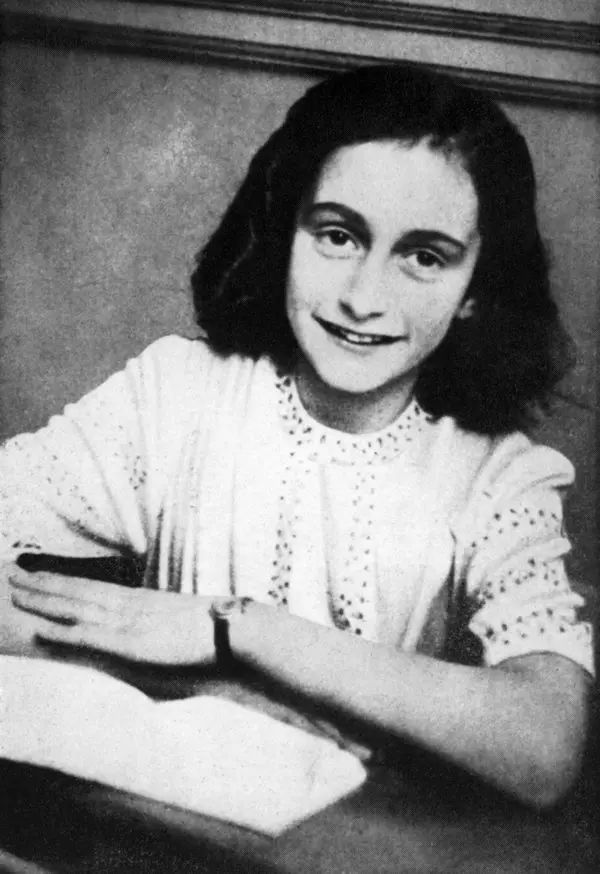

El diario de ana frank
Bibliografia y Biografia
- Ana Frank fue una joven judía alemana nacida el 12 de junio de 1929 en Fráncfort del Meno, Alemania. Debido al aumento del poder nazi, la familia Frank se mudó a Ámsterdam, Países Bajos, en 1933. En 1942, durante la Segunda Guerra Mundial, Ana y su familia se vieron obligados a esconderse en un anexo secreto detrás de la empresa de su padre. , Otto Frank, para evitar la persecución nazi. Durante más de dos años, Ana documentó sus pensamientos, sentimientos y experiencias en su diario personal, que se convertiría en una de las crónicas más conmovedoras del Holocausto. En su relato, Ana describió la vida en confinamiento, los desafíos emocionales, las relaciones con los demás escondidos y la lucha por la normalidad. Trágicamente, en agosto de 1944, la familia Frank y otros escondidos fueron descubiertos y arrestados por la Gestapo. Fueron deportados a campos de concentración, y Ana murió de tifus en el campo de concentración de Bergen-Belsen en marzo de 1945, a la edad de 15 años. Su madre y hermana también murieron en los campos. El único superviviente de la familia fue Otto Frank, quien regresó a Ámsterdam y se enteró de la muerte de su familia. Miep Gies, una de las personas que ayudó a la familia mientras estaban escondidos, le entregó el diario de Ana, que encontró intacto en el anexo. Después de la guerra, Otto Frank cumplió el deseo de Ana de convertirse en escritora y publicó su diario, que se ha convertido en un testimonio icónico de la persecución de los judíos durante el Holocausto. El "Diario de Ana Frank" ha sido traducido a numerosos idiomas y ha inspirado obras teatrales, películas y obras literarias, además de educar a las generaciones futuras sobre la tragedia del Holocausto y la importancia de la tolerancia y la paz.
Título: El Diario de Ana Frank
Autor: Ana Frank
Editor: Editorial Diana
Año de Publicación: 1947
Explicación: "El Diario de Ana Frank" es una obra literaria escrita por Ana Frank, una joven judía que vivió en Ámsterdam durante la Segunda Guerra Mundial. En su diario, Ana registró sus pensamientos, emociones y experiencias mientras se ocultaba con su familia en un anexo secreto para evitar la persecución nazi. La primera edición fue publicada en 1947 por Editorial Diana y se ha convertido en un testimonio importante del Holocausto y un símbolo de la lucha por la dignidad y la esperanza en tiempos de adversidad.
Edición Definitiva: "El Diario de Ana Frank: Edición Definitiva"
Autores: Ana Frank, Otto H. Frank (editor), Mirjam Pressler (editora)
Editor: Editorial Planeta
Año de Publicación: 1995
Explicación: La "Edición Definitiva" de "El Diario de Ana Frank" incluye el diario original de Ana, así como material adicional, comentarios y correcciones realizadas por su padre, Otto H. Frank, quien sobrevivió al Holocausto. Mirjam Pressler, una autora y editora, también contribuyó a esta edición, ayudando a mantener la autenticidad y el contexto histórico del diario. Publicada por Editorial Planeta en 1995, esta edición ofrece una visión más completa de la vida de Ana y su familia durante su período de ocultamiento.
- Edición Original en Neerlandés: "Het Achterhuis: Dagboekbrieven 14 Juni 1942 - 1 Augustus 1944"
Autor: Anne Frank
Editor:Editor: Contact
Año de Publicación: 1947
Explicación: La edición original en neerlandés, titulada "Het Achterhuis" (La casa de atrás), fue publicada en 1947 por la editorial Contact. Esta edición contiene las entradas de diario escritas por Ana Frank desde el 14 de junio de 1942 hasta el 1 de agosto de 1944, mientras se encontraba escondida de los nazis. El diario original es una parte fundamental de la historia y ha sido traducido a numerosos idiomas en todo el mundo. - Edición Crítica: "The Diary of Anne Frank: The Critical Edition"
Autores: Anne Frank (autora), David Barnouw (editor), Gerrold van der Stroom (editor)
Editor: Doubleday
Año de Publicación: 1989
Explicación: La "Edición Crítica" de "The Diary of Anne Frank" (El Diario de Anne Frank) fue publicada por Doubleday en 1989. Esta edición, editada por David Barnouw y Gerrold van der Stroom, ofrece una perspectiva más académica y profunda del diario. Incluye notas, comentarios y análisis que contextualizan las experiencias de Ana y su familia, así como detalles sobre la historia y el contexto histórico de la Segunda Guerra Mundial y el Holocausto. - Edición Definitiva Ilustrada: "The Diary of a Young Girl: The Definitive Edition"
Autor: Anne Frank
Editor: Bantam
Año de Publicación: 1993
Explicación: La "Edición Definitiva Ilustrada" de "The Diary of a Young Girl" (El Diario de una Joven) fue publicada por Bantam en 1993. Esta edición incluye las entradas de diario de Ana Frank acompañadas de fotografías, mapas y otros materiales visuales que ayudan a los lectores a comprender mejor el entorno en el que vivió Ana. La edición ilustrada agrega una dimensión visual al relato de Ana, proporcionando un contexto más vívido para sus experiencias. - Recursos Adicionales:
"Anne Frank: The Book, the Life, the Afterlife" por Francine Prose. Publicado por HarperCollins en 2009. Este libro explora el impacto duradero del diario de Ana Frank en la literatura y la cultura.
"Anne Frank: Reflections on Her Life and Legacy" por Hyman Aaron Enzer y Sandra Solotaroff-Enzer. Publicado por University of Illinois Press en 2000. Este libro analiza el legado de Ana Frank y su importancia histórica y cultural. - Recursos en Línea:
Página web oficial de la Casa de Ana Frank:www.annefrank.org/
Invitación a Explorar "El Diario de Ana Frank"
¡Te extendemos una cálida invitación a embarcarte en un viaje literario único y conmovedor! ¿Tiene sentido curiosidad por conocer las vivencias íntimas de alguien que enfrentó la adversidad con valentía durante tiempos turbulentos? "El Diario de Ana Frank" te brinda esa oportunidad. Descubre la poderosa narrativa de Ana Frank, una joven judía que registró sus pensamientos, emociones y experiencias mientras vivía oculta de la persecución nazi durante la Segunda Guerra Mundial. A través de sus palabras, te sumergirás en un anexo secreto, donde Ana y su familia enfrentaron el miedo y la esperanza en cada página. Este diario es un testimonio de la lucha humana por la dignidad y la supervivencia en medio del horror. A medida que leas sus páginas, serás testigo de la fortaleza de espíritu de Ana y su búsqueda de significado en situaciones desafiantes. Únete a esta travesía literaria que te llevará a través de un período oscuro de la historia, pero también te inspirará a reflexionar sobre la resiliencia y la importancia de preservar la memoria histórica. "El Diario de Ana Frank" te espera, listo para revelar una historia que nunca debe olvidarse. ¡Te invitamos a leer y compartir esta obra excepcional que trasciende el tiempo y toca los corazones de quienes la exploran! Fecha: ¡Hoy mismo! Lugar: En las páginas de este emocionante diario. Tiempo estimado: Una experiencia inolvidable. Espero que esta invitación te resulte útil y efectiva para inspirar a otros a leer "El Diario de Ana Frank". ¡Disfruta de la lectura!
Reflexion
ANA FRANK: Ana es una adolescente alemana siendo así mismo la protagonista de la historia , Ana es una adolescente a la
Cual le tocó experimentar una serie de momentos difíciles entre esos tener que haberse escondido junto a su familia con la intención de evitar la persecución nazi , Ana es una niña muy alegre y traviesa , tenía cabello oscuro , ojos castaños, mejillas rojizas , nariz puntiaguda y linda sonrisa.
He elegido a Ana frank para dar desenvoltura a la reflexión ya que la historia de ella me parece demasiado interesante y muy importante como para no hablar de ella y la verdad la elegí ya que también quise dar a conocer al lector como era ana y todo lo que le tocó vivir a ella personalmente.
Glosario
1. Abigarrados: De varios colores mal combinados. Heterogéneo, sin orden ni conexión.2. Abotargadas: abotagado, hinchado, tumefacto.
3. Anonadado: Causar gran sorpresa o dejar muy desconcertada a una persona. Apocar, disminuir mucho alguna cosa.
4. Aplomo: Gravedad, serenidad
5. Apátridas: Se dice de la persona que carece de nacionalidad.
6. Armatoste: Cualquier máquina o mueble tosco, pesado y mal hecho.
7. Arrabal: Barrio fuera del recinto de la población a que pertenece.
8. Benévola: Que es comprensivo o tolerante.
9. Bohardilla: Piso último de un edificio con techos inclinados que aprovechan el hueco del tejado. Ventana que sobresale verticalmente en el tejado como salida o iluminación.
10. Carillón: Grupo de campanas en una torre que producen un sonido armónico.
11. Catre: Cama estrecha y ligera para una sola persona.
12. Chucrut: Col fermentada con sal y vino, vinagre o aguardiente, de sabor ácido, y de larga conservación, que suele tomarse como acompañamiento de otros alimentos.
13. Codeína: alcaloide que se extrae del opio y se usa como calmante.
14. Correligionarios: Que profesa la misma religión o ideología política que otro o que pertenece al mismo partido político
15. Crispó: Causar gran irritación, o enojo. Causar una contracción brusca y momentánea de un músculo.
16. Deliberación: Consideración o reflexión sobre un asunto antes de tomar una decisión sobre él.
17. Deliberar: Meditar y considerar las opciones a favor y en contra antes de tomar una decisión. Resolver hacer algo habiéndolo meditado.
18. Demudado: Cambiar, alterar, desfigurar. Cambiarse repentinamente el color o la expresión de la cara.
19. Desgarbado: Sin garbo, sin gracia
20. Elocuente: Que tiene o manifiesta elocuencia en su expresión. Facultad de hablar o escribir de modo eficaz para deleitar y conmover, y especialmente para persuadir a oyentes o lectores.
21. Encarnizamiento: Crueldad con que alguien se ceba en la desgracia de otro.
22. Esparto: Planta gramínea, con cañas de unos siete decímetros de altura y hojas radicales de unos 60 cm de longitud arrolladas sobre sí en forma de filamentos, muy duras y resistentes, y flores en panoja.
23. Execrable: Digno de condena.
24. Fruslerías: Cosa de poco valor o importancia.
25. Genuflexiones: Acción de doblar la rodilla como reverencia. Prosternación, arrodillamiento.
26. Guisa: Voluntad, gusto, antojo. Modo, manera o semejanza de algo.
27. Hilaridad: Risa ruidosa y algazara causada por lo que se oye o lo que se ve.
28. Injurias: Agravio, ultraje de palabra u obra. Daño o incomodidad.
29. Jerga: Conjunto de expresiones especiales y particulares de una profesión o clase social.
30. Libraco: Libro que, por su contenido o por su excesivo tamaño, resulta despreciable.
31. Limítrofe: Colindante, fronterizo, contiguo.
32. Linóleos: Material fuerte e impermeable, formado por un tejido de yute cubierto con una capa de corcho en polvo amasado con aceite de linaza que se emplea para cubrir los suelos.
33. Menester: Necesidad de algo, ocupación, empleo. Materiales o instrumentos necesarios para ciertos trabajos
34. Metileno: En química, el metileno es un grupo funcional bivalente CH2 derivado formalmente del metano.
35. Minucia: Menudencia, nadería, cosa de poco valor. Detalle o rasgo irrelevante.
36. Mustios: Melancólico, triste, melancólico, triste
37. Naftalina: Hidrocarburo sólido procedente del alquitrán de la hulla muy usado, en forma de bolas, para preservar la ropa de la polilla.
38. Neceser: Caja o estuche con diversos objetos, especialmente para el aseo personal
39. Peroratas: Discurso o charla muy largos y aburridos. También se dice peroración.
40. Precedentes: Que precede o es anterior: en el artículo precedente se especifican los datos.
41. Prodiga: Productivo, abundante. Disipador, gastador, que desperdicia su hacienda en gastos inútiles.
42. Proferidas: Pronunciar, articular palabras o sonidos.
43. Remilgada: Excesivamente delicado o escrupuloso, con gracia y delicadeza en porte gestos y acciones.
44. Sucedáneo: Sustituto de mala calidad o se refiere a la sustancia o elemento que puede reemplazar a otro por tener propiedades similares
45. Taquigrafía: Método de escritura que permite la transcripción al ritmo del habla, basado en ciertos signos y abreviaturas.
46. Tornadiza: Que varía con facilidad, especialmente referido a quien cambia de creencia, partido u opinión.
47. Ulular: Producir un sonido parecido el viento. Dar aullidos o alaridos.
48. Verborragia: Es la verbosidad excesiva. es un término que se utiliza para designar a un tipo de actitud que supone el permanente hablar.
49. Vástago: Renuevo, rama tierna de un árbol o planta. Varilla, barra que transmite el movimiento a algún mecanismo.
50. Yute: Material textil que se saca de la corteza interior de varios árboles oriundos de Asia y África.
51. Zanjar: Resolver un asunto, o concluirlo
Analisis de YouTube
Sabias QUE...
El Nombre del Diario : El diario de Ana Frank se llama oficialmente "Het Achterhuis", que en holandés significa "La casa de atrás", en referencia al anexo secreto donde vivió durante la Segunda Guerra Mundial.
La Fecha de Comienzo : Ana Frank comenzó a escribir su diario el 12 de junio de 1942, en su 13º cumpleaños.
Edición y Revisiones : Ana Frank realizó varias ediciones y revisiones de su diario. Reescribió partes y tenía la intención de convertirlo en una novela después de la guerra.
El Día de la Detención : Ana y su familia fueron arrestadas el 4 de agosto de 1944, tras dos años de esconderse. La última entrada en su diario está fechada el 1 de agosto de 1944.
Las Páginas Perdidas : En la versión original del diario, había varias páginas cubiertas con papel marrón que se creían perdidas. Sin embargo, en versiones posteriores se descubrió que Ana había cubierto estas páginas debido a su contenido íntimo.
El Nombre "Kitty" : Ana se dirigió a su diario como "Kitty", a quien le escribió sus pensamientos y sentimientos como si fuera su amiga imaginaria.
Su Sueño de Ser Escritora : Ana expresó en su diario su deseo de convertirse en escritora famosa después de la guerra. Ese deseo se cumplió de manera postuma con la publicación de su diario.
La Última Entrada : La última entrada en el diario de Ana está fechada el 1 de agosto de 1944. En ella, escribió sobre la situación en el anexo y sus esperanzas de un futuro mejor.
El Descubrimiento del Diario : Después de la detención de la familia Frank, Miep Gies, una de las personas que les ayudó, encontró el diario en el suelo del escondite y lo guardó hasta que Otto Frank regresó.
La Muerte de Ana : Ana Frank murió de tifus en el campo de concentración de Bergen-Belsen en marzo de 1945, poco antes de la liberación del campo.
El Rescate del Diario : Otto Frank fue el único superviviente de su familia. Miep Gies le entregó el diario de Ana cuando regresó a Ámsterdam.